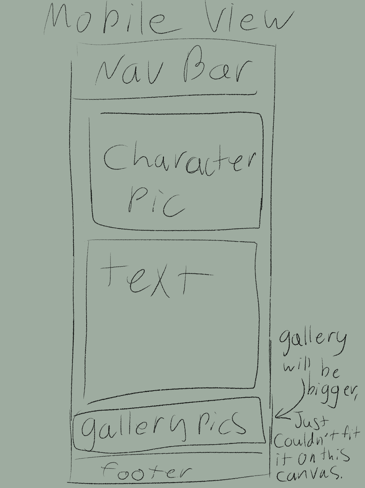
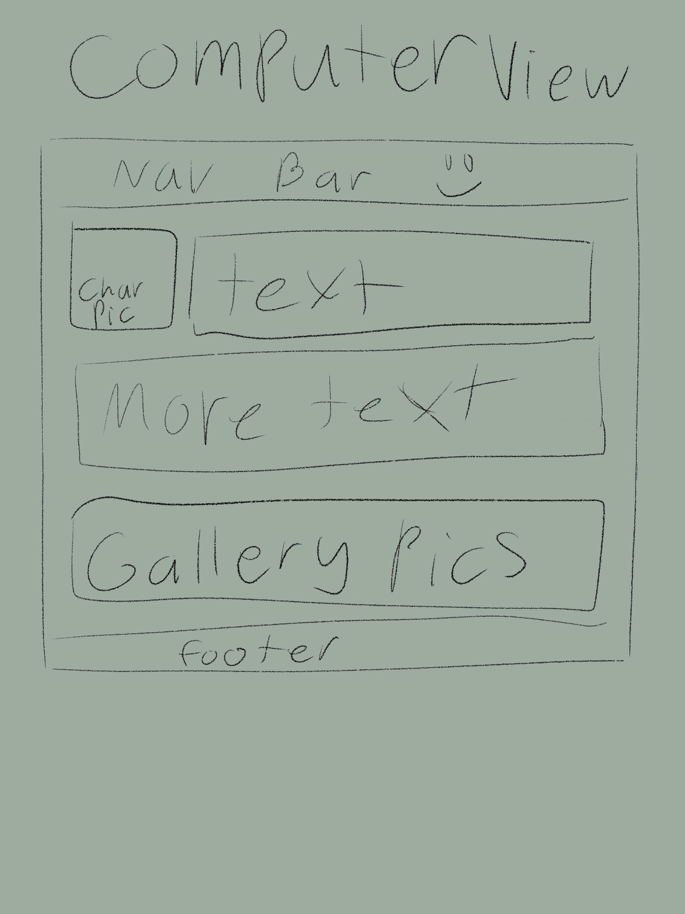

site name: Natalie's Favorite Fictional Men
// i chose this because it's just some of my favorite fictional men, because I wanted to make a site that hopefully motivated me to get it done, and bonus points because it's something i can show my friends lol
-----
the site's purpose is just to showcase my favorite characters.
-----
//the target audience is my friends, so I'll put in maybe some questions I can get from my friends, or have them rate the characters XD
-----
primary-color = cambridge blue = #9cc5a1
secondary-color = = #216869
accent1-color = eerie black = #1F2421
accent2-color = platinum = #DCE1DE
-----
https://coolors.co/1f2421-216869-9cc5a1-dce1de
-----
headings font = Chewy
sub headings = Comfortaa
body text = Source Code Pro
------
no i will not be styling this page.
 